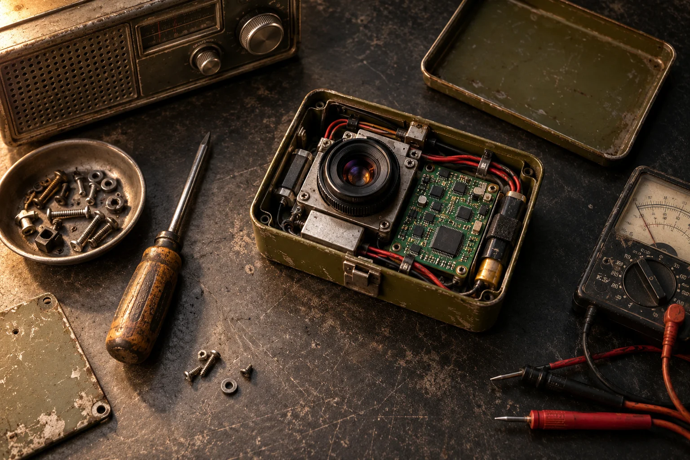

Разбери свой запас
Отметь рабочие детали и их количество. Предполагаемая находка внутри донора ещё не считается готовой деталью.
Старая электроника — это новые возможности.
Найди полезную сборку, подбери детали
и верни вещи в дело.

Начни с типового набора или добавь свои детали.
Восемь стартовых маршрутов.
Детали, доноры, шаги и проверка результата.
Прежде чем покупать новое, загляни в ящик со старой техникой. Иногда нужная деталь уже рядом.
Отметь рабочие детали и их количество. Предполагаемая находка внутри донора ещё не считается готовой деталью.
Посмотри комплектность, недостающие позиции и требования к совместимости. Список можно сохранить.
Пройди шаги, проверь результат на своём оборудовании. Скачай план — он останется под рукой.